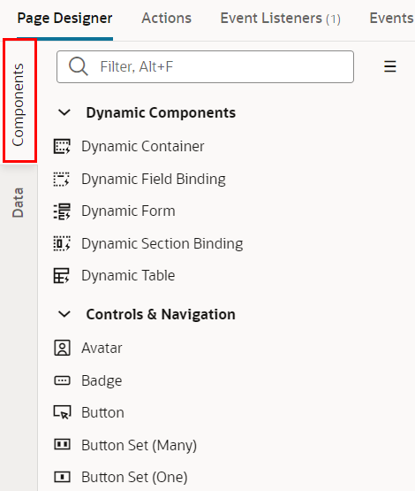

Visual Builder Cloud Service (VBCS) は、ユーザー・インタフェース(UI)・コンポーネントをページにドラッグ＆ドロップするだけで、Webアプリケーションやモバイル・アプリケーションを作成するためのビジュアル開発ツールです。 ボタンをクリックしてビジネス・オブジェクトを作成し、アプリケーションにCSVファイルをインポートしてデータを追加できます。
このチュートリアルは、インポートしたビジネス・オブジェクトのデータを折れ線グラフで表示する手順について説明します。
前提条件
-
Oracle Integration Cloud インスタンスの作成
Oracle Integration(OIC) を使い始めるための準備作業として、OIC インスタンスの作成が必要になります。この文書は OIC インスタンスの作成方法をステップ・バイ・ステップで紹介するチュートリアルです。
-
OIC インスタンスの ServiceAdministrator ロールが付与されたユーザーが準備されていること
(参考) Oracle Integration Roles and Privileges
Webアプリケーションの作成
このパートでは、VBCSで Web アプリケーションを作成する際に、最初に定義する ビジュアル・アプリケーション と Web アプリケーション を作成する手順を説明します。
ビジュアル・アプリケーションの作成
VBCSでは、最初に ビジュアル・アプリケーション を作成します。 ビジュアル・アプリケーションは、Web アプリケーションやモバイル・アプリケーションを開発するために使用するリソースの集まりです。 アプリケーションのソース・ファイルや、メタデータが記述された JSON ファイルを含んでいます。
Web ブラウザを開き、提供された OIC インスタンスのURLを入力します。もしくはOCIのコンソールから「開発者サービス」－「アプリケーション統合」から作成済みのOICインスタンスを選択し、「サービス・コンソール」からOICコンソールを開きます。

左ナビゲーションメニューの「ビジュアル・ビルダー」をクリックします。

VBCS の 「Visual Applications」 ページが表示されたら、「New Application」 ボタンをクリックします。
「Create Application」 ダイアログ・ボックスが表示されます。 次の表のように設定します。
| 設定項目 | 設定する値 | 説明 |
|---|---|---|
| 「Application name」 | ChartTutorial | アプリケーションにつける名前 |
| 「Id」 | ChartTutorial | アプリケーションのID。アプリケーションの URL にも用いられるので、VBCSのインスタンス内で一意である必要があります。 |
| 「Description」 | Tutorial Application | アプリケーションの簡単な説明 |
| 「Application template」 | Empty Application (デフォルト) | アプリケーションのテンプレート |

値を設定したら、「Create Application」 ダイアログ・ボックスの 「Finish」 ボタンをクリックします。
ビジュアル・アプリケーションが作成されると、VBCSのアプリケーション・デザイナでビジュアル・アプリケーションがオープンします。 アプリケーション・デザイナにはアーティファクト・ブラウザとWelcomeスクリーンが表示されます。 Welcomeスクリーンには、VBCSでアプリケーションを作成するためのタスクのガイドが表示されます。
アプリケーション・デザイナの左側の領域はアーティファクト・ブラウザと呼ばれる領域で、アプリケーションを構成する各種ソース・ファイル（HTML/CSS/JavaScriptなど）や、データ・アクセスや画面フローの設定などアプリケーションを実行する際に必要となるメタデータ（JSONファイル）が表示され、アクセスできます。
アーティファクト・デザイナには、次のタブ・ページがあります。
| 項目 | アイコン | 説明 |
|---|---|---|
| Mobile Applications | モバイルデバイスの機能を利用するネイティブモバイルアプリケーションを作成します。 | |
| Web Applications | デスクトップおよびモバイルデバイスのブラウザーで実行される最新のWebアプリケーションを作成します。 | |
| Services | サービス接続を作成して、サービスによって提供される既存のRESTエンドポイントを使用し、それらをアプリケーションで使用します。 | |
| Business Objects | ビジネスオブジェクトを作成して、アプリケーションのニーズに基づいてデータベースのカスタムRESTエンドポイントを定義します。 | |
| Layouts | レイアウトは、実行時に動的コンポーネントに表示されるフィールドを定義します。 | |
| Components | アプリケーションで使用する追加のコンポーネントを入手します。 | |
| Processes | Oracle IntegrationのProcess機能を使用して、ビジネスプロセスをアプリケーションに統合します。 | |
| Source View | 作成されたアプリケーションをソース形式で確認・編集することができます。 |
画面上部のアプリケーションの名前（Application nameとして指定したテキスト）の右隣に表示される 「DEVELOPMENT」 と 「1.0」 はそれぞれ、アプリケーションのステータス（development: 開発中を表す）とバージョンを表しています。
Web アプリケーションの作成
VBCS のビジュアル・アプリケーションは、1つ以上のWebアプリケーションまたはモバイル・アプリケーションを持ちます。 このチュートリアルでは、Webアプリケーションを作成します。
アーティファクト・ブラウザの 「Web Applications」 タブ をクリックします。 そのあと「+ Web Application」 ボタン(またはアーティファクト・ブラウザの右上にある 「＋」 アイコン)をクリックします。
「Create Web Application」 ダイアログ・ボックスが表示されたら、 「Application Name」 フィールドに 「ChartWebApp」 と入力し、 Navigation Style に 「None」 を選択し、 「Create」 ボタンをクリックします。
ChartWebAppアプリケーション のアーティファクトが生成されます。 ページ・デザイナで表示されている 「main-start」 が、アプリケーションの起動時に最初に表示される画面です。

アーティファクト・ブラウザで 「chartwebapp」 ノードを展開するとWebアプリケーションの構造が表示されます。 「main」 ノードを展開すると 「main-start」 ページが表示されます。
ビジネス・オブジェクトの作成
このパートでは、前のパートで作成したビジュアル・アプリケーションにビジネス・オブジェクトを作成します。 ビジネス・オブジェクトはアプリケーションで扱うデータを保持するためのリソースです。 ビジュアル・アプリケーションにビジネス・オブジェクトを作成すると、データを格納するためのデータベース・テーブルが自動的に作成され、そのデータを参照、作成、更新、削除するためのREST APIにアクセスできるようになります。
ここでは、売上を表すビジネス・オブジェクト Sale を作成します。 次に、作成したビジネス・オブジェクトにフィールドを追加します。 最後に、CSV ファイルからデータをインポートします。
ビジネス・オブジェクトの作成
アーティファクト・ブラウザの 「Business Objects」 タブを開いて、 「+ Business Object」 ボタン、または右上部にある 「＋」 アイコンをクリックします。
「New Business Object」 ポップアップ・ボックスが表示されたら、 以下の内容を設定して、 「Create」ボタンをクリックします。
| 設定項目 | 設定する値 | 説明 |
|---|---|---|
| 「Name」 | Sale | 作成するビジネス・オブジェクトを識別するためのID。 |
| 「Display Label」 | Sale | 作成するビジネス・オブジェクトの表示名。Nameと同じ値が自動的に設定されます。 |
ビジネス・オブジェクトが作成されたら、 「Fields」 タブをクリックします。 6つのフィールドが定義されています。
| フィールド | 説明 |
|---|---|
| createdBy | レコードを作成したユーザー |
| creationDate | レコードの作成日時 |
| id | レコードを一意に識別するID |
| lastUpdateDate | レコードの最終更新日時 |
| lastUpdatedBy | レコードを更新したユーザー |
| versionNumber | レコードのバージョン |
フィールド quarter の作成
「Fields」 タブ・ページの 「+」 ボタンから「Field」をクリックします。
ポップアップ・ボックスが表示されたら、追加するフィールドの設定を次の表のように設定し、 「Create Field」 ボタンをクリックします。
| 設定項目 | 設定する値 | 説明 |
|---|---|---|
| 「Label」 | quarter | 追加するフィールドのラベル |
| 「Field Name」 | quarter | 追加するフィールドを識別するための名前。Labelを入力すると自動的に設定されます。 |
| 「Type」 | String (「A」のアイコン) | 追加するフィールドのデータ型 |
フィールド quarter が追加されると画面の右端のプロパティ・エディタに quarter のプロパティが表示されます。 「Constraints」 の下にある 「Required」 をチェックします。
プロパティ・エディタで 「Required」 をチェックすると、フィールド quarter は必須データ項目に設定されます。 レコードの作成や編集フォームで、値が入力されているかどうか自動的にチェックされるようになります。フィールドquarterの「Required」 列にチェック・マークが表示されていることを確認します。
フィールド series の作成
「Fields」 タブ・ページの 「+」 ボタンから「Field」をクリックします。
ポップアップ・ボックスが表示されたら、追加するフィールドの設定を次の表のように設定し、 「Create Field」 ボタンをクリックします。
| 設定項目 | 設定する値 | 説明 |
|---|---|---|
| 「Label」 | series | 追加するフィールドのラベル |
| 「Field Name」 | series | 追加するフィールドを識別するための名前。Labelを入力すると自動的に設定されます。 |
| 「Type」 | String (「A」のアイコン) | 追加するフィールドのデータ型 |

フィールドseriesが追加されると画面の右端のプロパティ・エディタにseriesのプロパティが表示されます。 「Constraints」 の下にある 「Required」 をチェックします。
プロパティ・エディタで 「Required」 をチェックすると、フィールドseriesは必須データ項目に設定されます。 レコードの作成や編集フォームで、値が入力されているかどうか自動的にチェックされるようになります。フィールドseriesの「Required」 列にチェック・マークが表示されていることを確認します。
フィールド value の作成
「Fields」 タブ・ページの 「+」 ボタンから「Field」をクリックします。
ポップアップ・ボックスが表示されたら、追加するフィールドの設定を次の表のように設定し、 「Create Field」 ボタンをクリックします。
| 設定項目 | 設定する値 | 説明 |
|---|---|---|
| 「Label」 | value | 追加するフィールドのラベル |
| 「Field Name」 | value | 追加するフィールドを識別するための名前。Labelを入力すると自動的に設定されます。 |
| 「Type」 | Number (「#」のアイコン) | 追加するフィールドのデータ型 |
フィールドvalueが追加されると画面の右端のプロパティ・エディタにvalueのプロパティが表示されます。 「Constraints」 の下にある 「Required」 をチェックします。
プロパティ・エディタで 「Required」 をチェックすると、フィールドvalueは必須データ項目に設定されます。 レコードの作成や編集フォームで、値が入力されているかどうか自動的にチェックされるようになります。フィールドvalueの「Required」 列にチェック・マークが表示されていることを確認します。
「Endpoints」 タブ・ページを開くと、このビジネス・オブジェクトのデータの参照、作成、更新、削除のための REST API のエンドポイントが一覧できます。
エンドポイントURL配下のそれぞれの行は左から、HTTPメソッド、エンドポイントの説明、エンドポイントを識別する名前が記述されています。
データのインポート
test.csv をダウンロードします。
ビジネス・オブジェクトSaleの「Data」 タブをクリックします。
「Data」 タブ・ページが表示されます。 「Import from File」 アイコンをクリックします。
「Import Data」 ダイアログ・ボックスが表示されます。 「Drag and Drop」 と書かれたボックスをクリックするとファイルを開くウィンドウが表示されるので、ダウンロードしたtest.csvを開き(またはドラッグ＆ドロップ)、 「Import」 ボタンをクリックします。
「Import from File」 ダイアログ・ボックスにインポートが成功したことを表すメッセージが表示されたら、 「Close」 ボタンをクリックします。
「Data」 タブ・ページにインポートされたデータが表示されることを確認します。

main-startページの編集
このパートでは、main-startページを編集して、ビジネス・オブジェクトのデータを折れ線グラフで表示します。
アプリケーション・デザイナで main-start ページを開きます。
アプリケーション・デザイナの左側には、コンポーネント・パレットが表示されます。 コンポーネント・パレットは、デザイナの左にあるコンポーネントタブで表示/非表示を切り替えることができます。

コンポーネント・パレットを下にスクロールし、「Charts」 カテゴリの「Line Chart」コンポーネントを、タイトルの下にドラッグ＆ドロップします。
追加されたLine Chartコンポーネントのプロパティ・インスペクタでQuick Startタブを開き、「Add Data」をクリックします。
「Add Data」ダイアログ・ボックスが表示されます。 「Locate Data」ページでは、データを取得する REST エンドポイントを選択します。 「Business Objects」の「Sale」を選択します。 この手順により、REST エンドポイント（GET /Sale）にてデータを取得する設定ができます。 「Next > 」 ボタンをクリックします。
「Add Data」ダイアログ・ボックスの「Map Fields」ページでは、Line ChartコンポーネントのX軸、Y軸、およびシリーズデータを選択します。画面左側の「Endpoint Structure」で「item[i]」ノードの下の「value」、「quarter」と 「series」を順番にチェックします。「Line Chart Component Fields」 リストの下に、「value」、「quarter」と 「series」が順番に追加されていることを確認したら、「Next > 」 ボタンをクリックします。
TIPS
Value(Y Axis)フィールドは折れ線グラフのY軸用で、Categories(X Axis)フィールドは折れ線グラフのX軸用で、Colors(Series)フィールドは折れ線グラフの凡例用です。
「Add Data」ダイアログ・ボックスの 「Define Query」 ページでは、そのまま 「Finish」 ボタンをクリックします。
動作確認
最後に作成した画面を動作確認しましょう。
画面右上にある 「▷」(Run アイコン) をクリックします。
以下のような画面ができていることを確認できます。